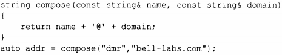
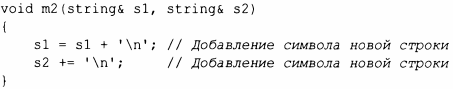
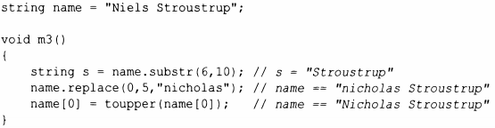
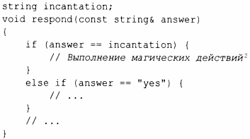
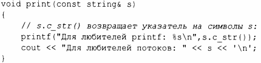
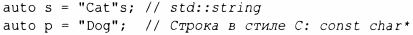

⇐9.1 Введение 9.2.1 Реализация string⇒
Стандартная библиотека в дополнение к строковым литералам (§ 1.2.1) предоставляет тип string, отвечающий концепrу Regular (§7.2, § 12.7), для владения и управления последовательностями символов различных типов. Тип string предоставляет множество полезных строковых операций, таких как конкатенация. Например:
Здесь addr инициализируется последовательностью символов dmr@belllabs.com. "Сложение" строк типа string означает конкатенацию. Вы можете "складывать" со строкой string другую строку string, строковый литерал, строку в стиле С или символ. Стандартная строка string имеет перемещающий конструктор, так что возврат даже длинных строк по значению выполняется эффективно (§5.2.2).
Во многих приложениях наиболее распространенной формой конкатенации является добавление чего-то к концу строки. Это действие непосредственно поддерживается операцией +=. Например:
Эти два способа добавления в конец строки семантически эквивалентны, но я предпочитаю последний, потому что он более ясно указывает, что он делает, более краток и, возможно, более эффективен.
Класс string - изменяемый. В дополнение к = и += поддерживаются также операции индекса (с использованием [ ] ) и получения подстроки. Например:
Операция substr () возвращает строку, которая является копией подстроки, указанной аргументами. Первый аргумент - это индекс в строке (позиция), а второй- длина требуемой подстроки. Поскольку индексация начинается с О, s получает значение Stroustrup.
Операция replace () заменяет подстроку значением. В этом случае подстрока, начинающаяся с О длиной 5, представляет собой Niels; она заменяется этой операцией на nicholas. Наконец, я заменяю начальный символ его эквивалентом в верхнем регистре. Таким образом, окончательное значение name - Nicholas Stroustrup. Обратите внимание, что заменяющая подстрока не обязана быть того же размера, что и заменяемая.
Среди множества полезных операций string - присваивание (=), индексирование ( [] или а t (), как и для класса vector; § 11.2.2), сравнение (== и ! =) и лексикографическое упорядочение(<, <=, > и >=), итерирование (с использованием итераторов, как для класса vector; § 12.2), ввод(§ 10.3) и использование времени компиляции потока(§ 10.8).
Естественно, строки string могут сравниваться одна с другой, со строками в стиле С (§ 1. 7 .1) и со строковыми литералами. Например:
Если вам нужна строка в стиле С (массив char с завершающим нулевым символом), string предоставляет доступ только для чтения к содержащимся в нем символам. Например:
Строковый литерал по определению представляет собой const char*. Чтобы получить литерал типа std::string, используйте суффикс s. Например:
Для использования суффикса s вам нужно использовать пространство имен std::literals::string_literals (§5.4.4).